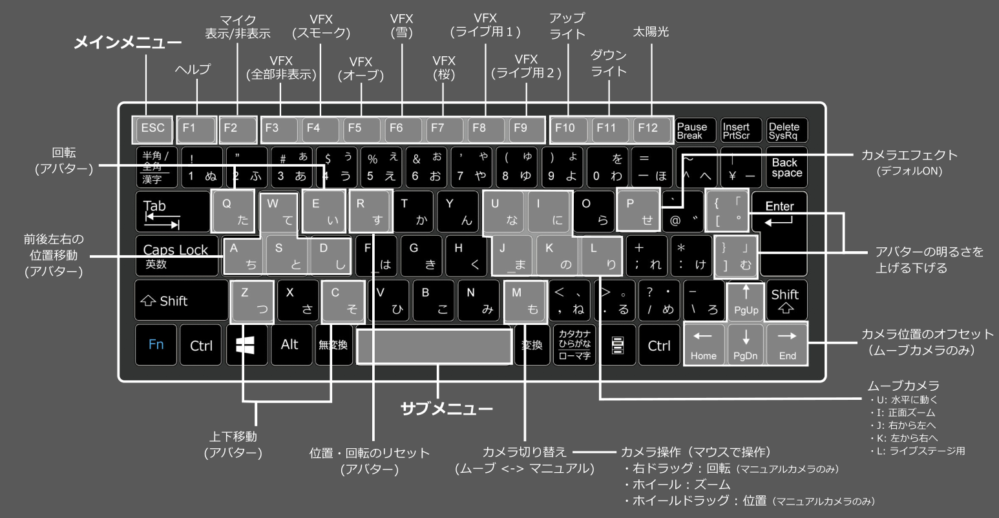

使い方
インストール
-アプリのダウンロードから起動まで-
- VRoomアプリを右上の「Download」ボタンからBOOTHのページに飛びダウンロードします。
- ダウンロードしたzipファイルを解凍します。
- フォルダ内のVRoom.exeを起動します。
- 初回起動時は右図の①のような警告が出ますが、実行を押します。
- 同じく初回起動時は右図の②のような警告も出ますが、基本キャンセルで大丈夫です。（コラボ機能を使う場合やVRoomとトラッキングソフトが別PCの場合は通信を許可するにチェックを入れてください。）
- 以上でアプリが起動し、インストールは完了です。
最初の設定（VRMモデルを動かす）
-VRoomとトラッキングソフトを連携しVRMモデルを動かします-
- VRoomとお使いになるトラッキングソフト（例：VSeeFace等）に同じVRMモデルを読み込みます
- 初回はモーション送受信の設定が必要です。トラッキングソフト側のOSC/VMCプロトコル送信を有効にし、ポート番号を設定します（ポート番号の例：39539）
- VRoom側もSettingメニューの「OSC/VMCプロトコル受信番号」に上記の送信側で設定したポート番号と同じ番号を入力します
- 詳しくは右の動画をご覧ください。
基本の操作
- ルームの移動や、カメラ・モデルの操作（以下はよく使うショートカット。基本操作は一つ上の動画も参照ください） -
◆メニューの表示
- 【ESCキー】 ： メインメニューの表示
- 【スペースキー】 ： サブメニューの表示
- 【F1キー】 ： ショートカットメニューの表示
◆ルーム・画面解像度の変更
- ルームの移動 ： メインメニューのRoomボタンから選択
- 画面解像度の変更 ： メインメニューのScreenSizeボタンから選択
◆モデルの移動
- 【Rキー】 ： 初期の位置へ移動
- 【W,A,S,Dキー】 ： 前後左右
- 【Q,Eキー】 ： 回転
- 【Z,Cキー】 ： 上下
◆カメラの操作
- 【Mキー】 ： ムービングカメラとマニュアルカメラの切替
- 【↑↓←→キー】 ： ムービングカメラ位置のオフセット
- 【マウスホイール】ズーム
- 【マウス右ドラッグ】回転（マニュアルカメラのみ）
- 【マウスホイールドラッグ】位置移動（マニュアルカメラのみ）

お気に入りポジションの保存・アバター・マイクの位置
◆お気に入りポジションの保存
- アバター、カメラ、マイク、モニターの位置を２ヵ所までセーブ・ロードできます。
◆アバターの位置移動・ミラーモード設定
- アバターの位置を調整します。細かく調整したい場合は、移動速度を変更してください。
- ミラーモードをONにすると、アバターの動きが左右反転します。フルトラ時などに使うと良いです。
- ブレンドシェイプ機能でアバターのブレンドシェイプを変更できます。
◆マイクの位置とサイズ変更
- マイクは現在3種類あるのでお好みのをお使いください。
カメラ・画面エフェクト
◆カメラの変更
- ムービング・マニュアル・正面カメラに切替できます。お好みで切替速度を調整してください。
- ムービングカメラの種類は現在5種類となります。またムービングカメラのみ上下左右に位置調整できるオフセットがあります。アバターの身長などに合わせてお使いください
- カメラを頭に追従させる機能や位置を同期させる機能があるので、フルトラ時などに使うと良いかもしれません。
◆画面エフェクトの変更
- 画面エフェクトは現在4種類です。被写界深度をONにすると背景をぼかす事ができます。
ライト・パーティクル・空
◆ライトの変更
- 各種ライトのON・OFF、光量の調整ができます。光の当たり具合によってはアバターの影が可愛くない感じになる場合があるので、うまく調整しましょう。
◆パーティクルの変更
- パーティクルは現在6種類あります。ライブの演出などに効果的です。
◆空の変更
- 部屋の外の空（sky）の種類を変更できます。部屋の外が見えないルームではここを変更しても何も変わりません。
ポーズ・モーション機能
- 顔以外の部分の、上半身、下半身にポーズやモーションをとらせることができます。
- 上半身はトラッキングを利用し、下半身は座らせたり、ポーズをとらせる事できます。
- 歌枠などのライブ時に、顔だけのトラッキングだと棒立ちな感じになってしまうので、モーションを使うと良い感じになります。
モニター表示機能
◆動画再生モニター
- ローカルやWeb上の動画（windowsが再生できる形式：mp4等）を再生出来ます。Youtube等のストリーミング動画は再生できません。
◆デスクトップモニター
- デスクトップ画面を表示できます。
◆Windowモニター
- 特定のウィンドウを指定して表示することができます。
- TVがある部屋や、ライブステージでは、モニターを良い感じの位置に移動できる「TVモニターポジション」「ライブモニターポジション」ボタンがあります。
OBSにUIを映さないで配信しよう
- OBSにSpout2と言うプラグインを導入すると、UIを映さないで配信する事ができます。
≫ Spout2プラグインはこちら - 上記プラグインをOBSに導入し、VRoomのSpout2の設定をONにします。
- OBSで表示するソースをSpout2 CaptureにするとUIを映さないで配信できます。詳しくは右の動画をご覧ください。
マイルームのカスタマイズ機能
- マイルームのカスタマイズ機能で部屋のカスタマイズが出来ます。詳しくは右の動画をご覧ください。
- 部屋のベースを設置し、その中に家具や小物を配置し自分のルームを作る事ができます。
- 配置できるオブジェクトはまだ少ないですが今後増えて行く予定です。
コラボ機能を使ってみよう
- 同じネットワーク上であれば他の配信者とコラボができます。詳しくは右の動画をご覧ください。
- VPNを使えば離れた配信者同士でコラボも可能ですが、セキュリティ面などにおいて自己責任・自己判断でご利用ください。
TDPTでフルトラ配信してみよう
- TDPT（Three D Pose Tracker）を使ってフルトラ配信する方法です -
- Webカメラとトラッキングソフト（TDPTとVSeeFace）のみでフルトラ配信する方法です。詳しくは右の動画をご覧ください。
- TDPTはDigitalStandard様のWebカメラだけでフルトラ出来るアプリです。TDPTのページは以下になります。
≫ TDPTはこちら - TDPT用のカメラには広角の物がオススメです。
mocopiでフルトラ配信してみよう
- ソニー株式会社様の、モーションキャプチャーデバイス「mocopi」と連携した配信方法の説明になります。
≫ mocopiの製品情報ページはこちら
- 文章での説明では分かりにくいので、右の「mocopiとPCの接続わくわくガイド」の画像をご参考ください。
- こちらのガイドは、corocoma様が制作された画像を、一部私の方で文言を修正させて頂いたものになります。
- こちらのガイドの画像や文章の一部に、VMC公式の使い方ガイド（mocopiのつかいかた）を引用させて頂いております。
覚えておきたい小技
アバターが画面外に行って行方不明の時はバモキャの「現在位置を中心にする」を押す！